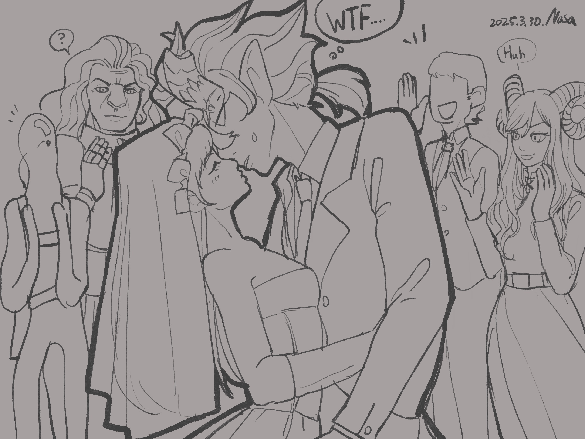
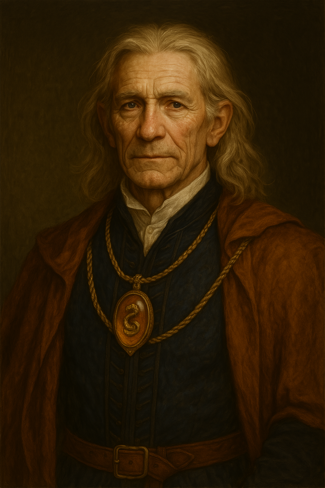
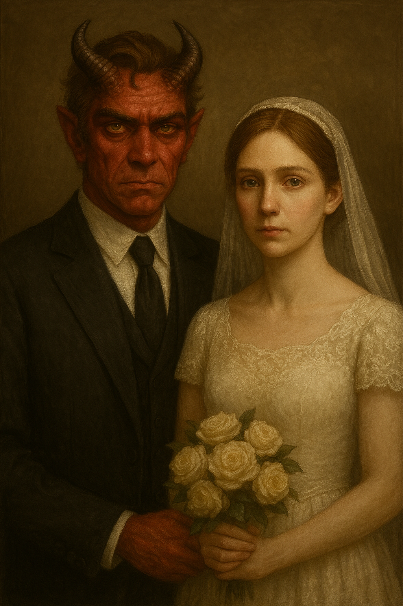
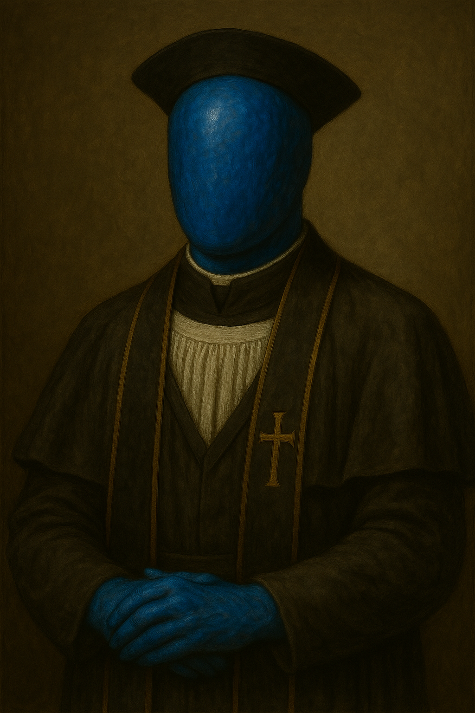
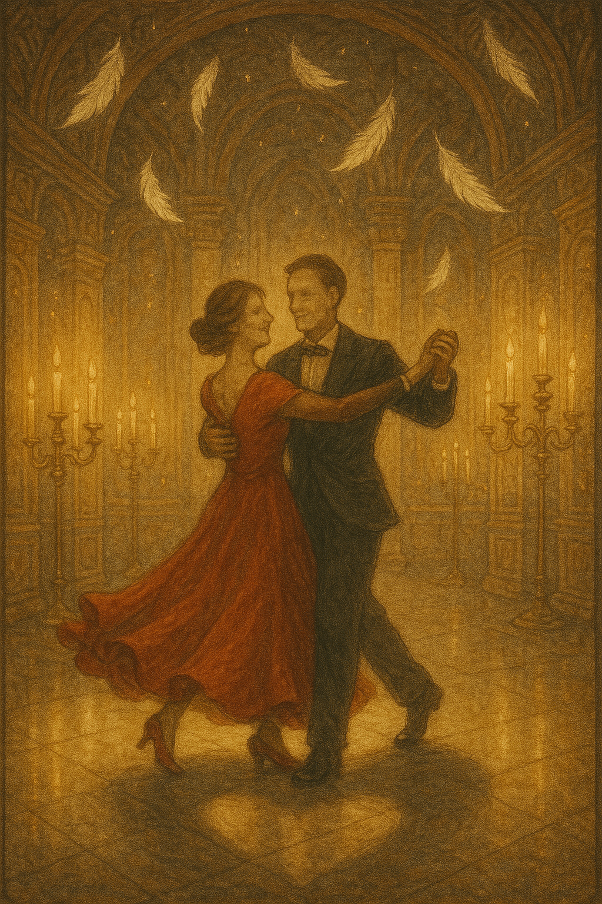
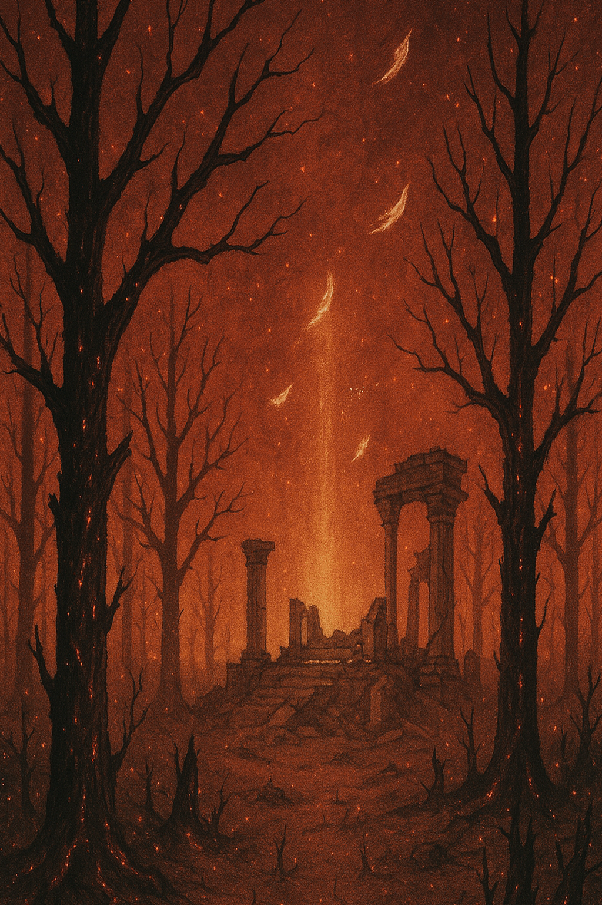
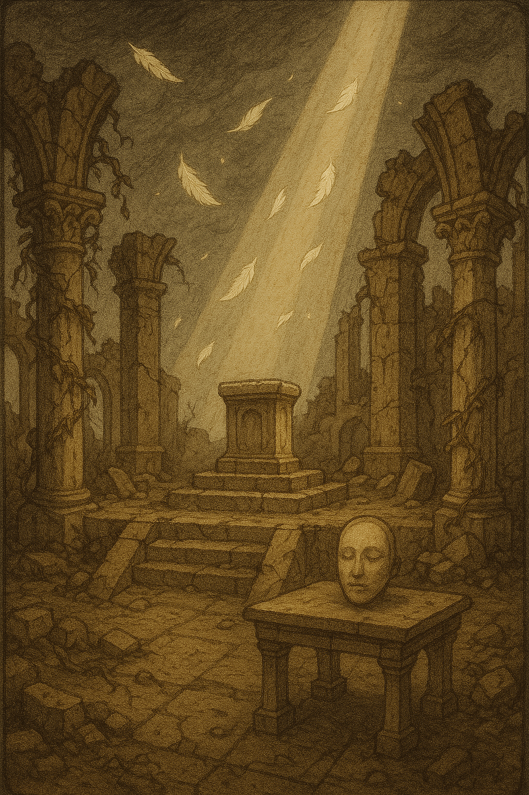
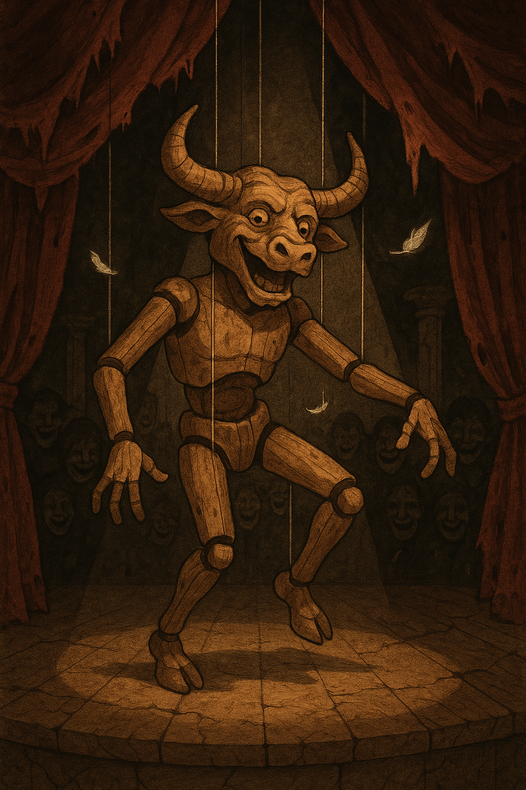

Chapter 2: Fate of the Destined Past
Requiem of the Feathered Estate


Requiem of the Feathered Estate
15051.09.14
當羅特再次回過神來，酒館內只剩下他與酒保了。儘管他知道酒精已無法麻痺他的情緒，他還是數不清自己到底喝了幾杯。羅特站了起身，想換到身後的圓桌去。定睛一看，其中一張圓桌上，放了一本破舊的筆記本。
羅特拾起筆記本，封面是空的，但翻開，裡面是滿滿的生物筆記，用羅特熟悉的筆跡，理性地寫著某人的觀察，以及那人的註記。羅特翻到其中一頁，寫著的物種是「魔人」，裡面的文字讓他想起了什麼，卻又說不明白，只感到內心滿滿的悸動。而最後一頁，則畫上了羅特的肖像畫。
有人拍了拍羅特的肩，他一回頭，是滿面愁容的利希恩。利希恩提醒著他，下次別忘記帶走自己的筆記本了。羅特感到困惑，他知道這不是屬於他的東西，但利希恩卻非常明確的告訴他，那是羅特自己帶來的。而不論這是否是羅特自己的東西，他很清楚，他會非常珍惜它。畢竟那與他喪失的某段珍貴回憶有很大的關聯。
羅特在小圓桌做了下來，利希恩承諾羅特可以在這裡待到他想離開為止，羅特便拿出了一塊小木頭，開始雕刻，利希恩則悄聲離去。
「我……還有機會見到他嗎？」羅特在利希恩推開門前問到。
「你知道，你可以待在這裡，直到你想離開為止。」利希恩回應他。「多久都可以。」
看見庫登與烏波走入了劇場，站在門口的賽柏卻被長廊上的某個東西吸引住了。那是一幅剛才還不存在的肖像畫。畫中的人不是別人，而是……說來也怪，晚餐時，他們的夥伴GoR不是還在嗎？怎麼就不見人影了？畫中這個GoR怎麼好像已步入老年，還穿得一身正裝？怎麼看都不對勁？

賽柏思忖著，還是決定向內心最可靠的奈西斯祈禱。他感受到莊園內還存有奈西斯的神力。閉上眼，賽柏跟隨著奈西斯賜予他的直覺向前走。睜開眼，他卻發現一名羽僕正領著他，最終他們停在一扇門前。羽僕將門打開，伸出手，示意賽柏進入。想著這也是奈西斯引導他來的地方，賽柏就這樣摸黑走入房間內了。
房內一片漆黑，只有正中央有一簇火苗。但當門關上時，周圍瞬間化作一片森林，那是奈西斯權能的象徵。賽柏還來不及喘口氣，就發現正中央的火苗已換成了一株盆栽，生機盎然。但森林的周圍，卻開始出現火光。
賽柏走向盆栽，他聽見了一道他認不得的聲音，說著：「你是遵循著自己的意志，追尋奈西斯，還是只是盲目的跟隨著別人叫你做的事呢？」賽柏回頭跑向來的方向，卻發現那道格格不入的門轉不開。
火勢漸漲，賽柏趕緊跑向盆栽。
「燃燒我，或是成為我。」他聽見自己的聲音，從盆栽的方向傳來。眼看火就要燒到盆栽了，賽柏抱起盆栽，跑向那扇門，門把輕易的被轉開。賽柏踏出門檻，回頭看向焚燒過後的房間，大聲喊道：「我的生命是奈西斯救來的，我遵循奈西斯之道，不是因為任何人要我這樣做，而是我自己的決定！」他便步回長廊去。他手中的盆栽在他回到長廊時，化成了一片金色的葉子，賽柏謹慎地將它收好。
重新回到劇院門口，賽柏看見庫登正僵直地站在舞台上，一旁的小丑正在鼓譟著觀眾們鼓掌。庫登默默走下台，徑直朝向出口走去。在舞台前丟小丑石頭的烏波則跟上庫登。
三人會和後，賽柏向他們兩人指著他看見的GoR的肖像。庫登皺起眉，烏波則翻起畫框，著急地看著畫框喊著：「你怎麼跑進畫裡去了？」一旁的羽僕小聲卻說著烏波不可以破壞畫像，但烏波直接把畫連同畫框摘下，羽僕也沒辦法做什麼。
羅特完成了他的木雕，那是一隻鳥人的半身雕刻。既熟悉，又陌生，就好像那是他潛意識的某個重要的東西，但他在怎麼努力都還想不起來。烏波之前召喚出的烏鴉看見完成的雕刻，夾起雕刻的脖子處，朝著不知何時被打開的酒館門口跳去，羅特小心翼翼地追上，祈求木雕不會被牠破壞，也就跟著跑回了長廊。從烏鴉口中拿回了木雕，羅特趕緊把它收好。
另一名羽僕在長廊上喊著晚餐已經準備好了，烏波一聽，便夾著GoR的肖像畫衝向餐廳。此時羅特正好從酒館跑了出來。看見熟悉的夥伴們正步向餐廳，他也就跟上了。
走入餐廳，門口旁，一名羽僕將餐盤與餐具紛紛遞給踏入的賓客，烏波趕緊衝向餐點區，將豬肋排夾了幾塊到他的盤子內，然後將原本拿來盛裝給賓客的鐵盤整盤端走，只留下他的小瓷盤放在桌上。
冒險者們靠向牆邊，互相交換著資訊。同時，烏波也不忘記餵食「被困在畫裡的GoR」他拿的豬肋排，搞得畫像一團亂。
突然間，熟悉的小丑再次出現在庫登面前，嚇著了大家。「我們的主角上次鬧了場，這次要不要換個劇本演啊？」小丑戲謔的看著庫登，烏波則拾起他吃剩的豬肋排骨頭，丟向小丑。庫登回過神來，也朝向小丑施展魔法。一瞬間，小丑滑稽地定格，然後倒下，但他身後，一個姿勢一模一樣的小丑拍了拍手，看著群眾，喊著「謝謝我們主角的演出！」對冒險者們一一鞠了躬後便消失在人群之中了。倒在地上的小丑，只留下一套小丑裝，賽柏將它收起。
冒險者們重新回到長廊，而在原本GoR的畫像處，已經掛了另一幅畫，畫中的是一名中年的紅色魔人男子，頭上一支角斷了，套上了環，像極了羅特。不過表情嚴肅的他身穿一套西裝，而且身邊還站了個神情相似的人類女子，身著婚紗，兩人牽著手。羅特一看大驚失色，人類、女性，這都不是他心之所向，這到底是怎麼回事？

羅特驚慌地看著四周，卻發現畫中的女子竟然出現在他的身後，哭泣著。賓客們紛紛劇了過來，大聲地祝賀著羅特新婚快樂，不知道從哪裡走來的樂隊更開始奏樂。羅特慌亂，大聲問著女子是什麼人？而女子哭得更傷心，念著羅特怎麼會連自己的老婆都認不得？女子喊著要樂隊停下來，他覺得太尷尬了，但樂隊停下來後，現場的一片寂靜更為尷尬。羅特也發現自己竟然換了身與畫中相同的西裝。為了化解危機，羅特決定做他不想做的事—他俯身向女子親吻，女子瞬間破涕為笑，眾人也大聲歡呼。
接著羅特以上廁所為藉口，朝著餐廳方向跑去。其他冒險者們也隨後跟上。關上餐廳的門，羅特大力喘氣，確保「新娘」沒有跟上。但他也發現他原本的衣服不僅沒有在身上，也沒有在他的背包內，他只能繼續穿著這套西裝了……。
餐廳內，冒險者們看見利希恩自在地穿梭著，手上拿著一本筆記本，時不時停下來寫一寫。
「當羽落下，我便不再為人；那條路，將無人同行……」
「他們說，我將成為永恆。但若永恆是孤單，那又有誰能見證我的愛？」
「我將是愛的化身，或只是愛的遺骸……」
羅特決心必須離開莊園，儘管他念念不忘那名鳥人。踏回長廊，他們又發現有個詭異的肖像畫了，上面是與烏波相似的流漿人，但卻很明顯穿著的是不同於他所信仰的芬尼爾的宗教服裝，很顯然是個神職人員的模樣。姿態肅穆，與混亂而愚蠢的烏波大相徑庭。羅特決定將這幅畫取下。

這時，羅特聽見一個年老的聲音從他背後傳來。「有些事情，你們該知道。」他一回頭，發現一個矮小的斗篷人。斗篷下的臉，是他的師父，伊，不過年紀非常非常大，還拄著拐杖。羅特看了趕緊扶著伊。
同時，其他冒險者們看見的，卻與羅特不同。賽柏和烏波都看見了一名他們不認得的人，庫登則看見了一位他憎恨不已的人：修洛。
羅特跟著伊，走向一扇門，賽柏、烏波也跟上，庫登雖然不想跟著修洛走去，但也好奇這是怎麼回事，於是殿後。
斗篷人推開門，緩緩走入昏暗的房間。
羅特走入了房間，裡面有一張木桌。伊坐在木桌後，示意羅特坐下。伊拿出一疊紙牌，翻了三張放在桌上，讓羅特選擇。羅特選了中間一張，伊將它翻開。

「羅特，這是你的卡，無盡的雙人舞。那暖的手，熟悉的旋律……如果我說，你可以永遠留在這裡，你會怎麼做？」
賽柏走入房間，卻沒見到在他前面的羅特，只有斗篷人坐在桌子後。賽柏仔細一看，這人很明顯是奈西斯的神職人員，只是他認不出來。
斗篷人遞給了賽柏一疊牌，讓他隨意選一張。

「賽柏，這是你的卡，焚燒的森林。森林已被燒盡，而你聽不見涅西斯的聲音。如果涅西斯不再與你溝通，你還會信仰他嗎？」
當烏波坐下時，他發現坐在他對面的，是與他相同的流漿人，就像在模仿他一樣。同時，他也聽見身旁傳來嘻笑聲。他一看，幾隻孽物在他身邊遊走，倒也令他感到安心。
流漿人將牌遞給烏波，示意他切牌。烏波切了一次後，流漿人便將牌翻開。

「烏波，這是你的卡，無神的殿堂。你走進月神芬尼爾的聖所，卻發現月神不曾存在，一切，都只是你的幻想。你該怎麼做？」
「月神是真的！你騙人！」烏波大喊，拿出武器，將眼前的木桌劈成一半。被劈開的木桌化成流漿，落在地上。
庫登走入房間內，有所不甘地坐了下來，瞪視著他恨的那人—他這輩子第二恨的人。
「庫登，你坐啊。」修洛邪佞的笑著。「來，選一張牌吧！」他洗了洗牌後，將牌隨機的丟在桌上，但庫登雙手叉腰，繼續瞪著他，沒有要做出選擇。「你不選的話，我就幫你選囉？」

「庫登，這是你的卡，操線的木偶。你認為演員是什麼？是自由的創作者，還是受劇本操控的傀儡？」
在羅特依依不捨地離開伊之前，他知道了一件事：那不是他的伊。那只不過是騙人的魔法罷了，但他還是無法壓抑住內心悸動的情緒。
踏出門，羅特看見其他冒險者們在外面等著。
冒險者們在長廊上，不斷聽見羽僕們竊竊私語，說著「雖然時間還沒到，但需要開始準備了」、「再不準備就要來不及了」、「已經開始了嗎？還是已經結束了嗎？」等的話語。他們攔下一名羽僕，詢問是什麼事情。羽僕解釋是稍晚的儀式。
冒險者們詢問羽僕儀式場地在什麼地方？羽僕便帶他們前往一扇鎖上的門，然後就離開了。
門把轉不動，但開鎖是羅特的專長。他輕鬆的用了自己的工具，把門鎖解開，大家一起踏入這個偌大的陰暗的空間。
門在背後關上，視野內，是一張如同王座的座椅，大小卻有點小，頂多只能坐一個未成年的瘦弱孩子。
庫登繞到座椅前，發現椅子上放了一本筆記本，而更令他感到在意的是，那張座椅的後方，竟然有一扇張開翅膀的造型，誇張而狂妄；椅子手把的兩側，竟然還有鐵鍊。
庫登拿起筆記本開始翻閱，烏波則索性坐在座椅上，玩弄著鐵鍊。筆記本的外型，與冒險者們看見利希恩時不時抄寫的那本筆記本相同，而內容，則很顯然的是他的日記和情詩。
庫登發現其中一頁，畫著他眼前的座椅，而上面，坐著的是一名翅膀垂落的瘦小女子，長髮散落在他垂下的頭前。
「天使」是他第一個想到的字眼，也是利希恩曾說過芬尼爾曾賜予他，卻又奪走的。
而筆記本的最後一頁，則留下了這樣的字句：「世上最可怕的，不是沒有人愛，而是愛過之後，發現你的愛，只是想像。」
烏波聽見遠方傳來腳步聲。定睛一看，利希恩沈穩的朝冒險者們走來。
「你們提早來了，儀式還沒準備好。」利希恩說道。「不過沒關係。」
冒險者們不清楚這儀式要做什麼，但很顯然利希恩也沒有要透露。烏波也知道這和芬尼爾常見的靈魂交換儀式是不同的。
「你們先出去吧，等到時機到了，羽僕們會再喚你們來的。」利希恩請示冒險者們離開。「反正儀式還沒開始，你們待在這裡什麼也看不到。」
冒險者們知道留下來也沒有意義，便轉身離開。但在推開門的前一刻，烏波轉頭一看，利希恩的身影在黑暗之中，似乎頭邊散出了淺淺的光暈。
15051.09.14
When Lott came to his senses again, he and the bartender were the only ones left in the tavern. Although he knew that alcohol could no longer numb his emotions, he still lost count of how many drinks he had. Lott stood up and wanted to move to the round table behind him. Taking a closer look, he saw a worn notebook placed on one of the round tables.
Lott picked up the notebook. The cover was empty, but when he opened it, it was full of biological notes. In Lott's familiar handwriting, someone's observations and notes were written rationally. Lott turned to one of the pages, and the species written on it was "Demon". The words inside reminded him of something, but he couldn't explain it. He only felt full of throbbing in his heart. On the last page, there is a portrait of Lott.
Someone patted Lott on the shoulder. When he turned around, he saw Lysien with a sad face. Lysien reminded him not to forget to take his notebook with him next time. Lott was confused, he knew it was not something that belonged to him, but Lysien told him very clearly that it was brought by Lott himself. And whether or not it was Lott's own, he knew full well that he would cherish it. After all, it has a lot to do with a certain precious memory he lost.
Lott finished at the small round table. Lysien promised Lott that he could stay here until he wanted to leave. Lott took out a small piece of wood and started carving, and Lysien left quietly.
"Do I... still have a chance to see him?" Lott asked before Lysien opened the door.
"You know, you can stay here until you want to leave." Lysien responded to him. "As long as it takes."
saw Kudan and Ubbo walking into the theater, but Psyber standing at the door was attracted by something on the corridor. It was a portrait that didn't exist just a moment ago. The person in the painting is none other than... Oddly enough, wasn't their partner GoR still there during dinner? Why is there no one there? Why does GoR in the painting seem to be in old age and still dressed in formal clothes? Nothing seems right no matter how you look at it?
Psyber After thinking about it, he decided to pray to Nessis, the most reliable person in his heart. He sensed that Nessis's divine power still existed within the manor. Closing his eyes, Psyber followed the intuition given to him by Nessis. When he opened his eyes, he found a feathered servant leading him, and finally they stopped in front of a door. The feather servant opened the door, stretched out his hand, and motioned for Psyber to enter. Thinking that this was where Nessis led him to, Psyber walked into the room in the dark.
The room was dark except for a cluster of flames in the center. But when the door closes, the surroundings instantly transform into a forest, a symbol of Nessis's power. Psyber Before he could take a breath, he discovered that the fire in the center had been replaced by a potted plant, full of life. But fire began to appear around the forest.
Psyber walked towards the potted plant and heard a voice he did not recognize, saying: "Are you following your own will and pursuing Nessis, or are you just blindly following what others tell you to do?" Psyber turned back and ran in the direction he came from, only to find that the incompatible door could not be opened.
As the fire grew stronger, Psyber hurriedly ran towards the potted plants.
"Burn me, or become me." He heard his own voice coming from the direction of the potted plant. Seeing that the fire was about to burn the potted plant, Psyber picked up the potted plant and ran towards the door. The doorknob was easily turned open. Psyber stepped out of the threshold, looked back at the burned room, and shouted loudly: "My life was saved by Nessis. I follow the way of Nessis, not because anyone wants me to do so, but because of my own decision!" He walked back to the corridor. The potted plant in his hand turned into a golden leaf when he returned to the corridor, and Psyber put it away carefully.
Returning to the entrance of the theater, Psyber saw Kudan standing stiffly on the stage, and the clown beside him was encouraging the audience to applaud. Kudan silently walked off the stage and headed straight for the exit. Ubbo, who threw clown stones in front of the stage, followed Kudan.
After the three met, Psyber pointed to the two of them at the portrait of GoR he saw. Kudan frowned, while Ubbo turned over the picture frame, looked at the picture frame anxiously and shouted: "Why did you run into the painting?" The servant on the side whispered that Ubbo should not destroy the portrait, but Ubbo directly took off the painting and the frame, and the servant could not do anything.
Lott has completed his wood carving, which is a half-length carving of a birdman. It was both familiar and unfamiliar, as if it was something important in his subconscious, but he couldn't remember it no matter how hard he tried. The crow summoned by Ubbo saw the completed carving, picked up the neck of the carving, and jumped towards the door of the tavern that was opened at some point. Lott cautiously caught up with it, praying that the wood carving would not be damaged by it, and ran back to the corridor. After taking back the wooden sculpture from the crow's mouth, Lott quickly put it away.
Another servant shouted in the corridor that dinner was ready. Upon hearing this, Ubbo rushed to the restaurant with GoR's portrait under his arm. At this time Lott happened to run out of the tavern. Seeing his familiar companions walking towards the restaurant, he followed them.
Entering the restaurant, a servant handed plates and cutlery to the guests at the door. Ubbo rushed to the dining area, put a few pieces of pork ribs on his plate, and then took away the entire iron plate that was originally served to the guests, leaving only his small porcelain plate on the table.
The adventurers leaned against the wall and exchanged information with each other. At the same time, Ubbo did not forget to feed "GoR trapped in the painting" with the pork ribs he took, causing a mess in the painting.
Suddenly, the familiar clown appeared in front of Kudan again, scaring everyone. "Our protagonist made trouble last time, do you want to change the script this time?" The clown looked at Kudan jokingly, while Ubbo picked up the leftover pork rib bones and threw them at the clown. Kudan came to his senses and also cast magic on the clown. For a moment, the clown froze comically, and then fell down, but behind him, a clown with exactly the same posture clapped his hands, looked at the crowd, shouted "Thank you to our protagonist for your performance!" He bowed to the adventurers one by one and disappeared into the crowd. The clown fell to the ground, leaving only a clown suit, and Psyber put it away.
The adventurers returned to the corridor, and where the original portrait of GoR was, another painting had been hung. The painting showed a middle-aged red demon man with a broken horn on his head and a ring on it, which looked very much like Lott. But he was wearing a suit with a serious expression, and there was a human woman with a similar look standing next to him, wearing a wedding dress, and they were holding hands. Lott was shocked when he saw it. Human beings and women were not what he wanted. What on earth was going on?
Lott He looked around in panic, only to find that the woman in the painting appeared behind him, crying. The guests all jumped up and loudly congratulated Lott on their happy wedding, and the band that came from nowhere started to play music. Lott panicked and asked loudly who the woman was? The woman cried even more sadly, thinking Lott. How could he not even recognize his wife? The woman shouted for the band to stop, which he felt was too embarrassing, but after the band stopped, the silence was even more embarrassing. Lott also found that he had changed into the same suit as in the painting. In order to resolve the crisis, Lott decided to do something he didn't want to do - he leaned over and kissed the woman. The woman burst into laughter instantly, and everyone cheered loudly.
Then Lott used the toilet as an excuse and ran towards the restaurant. Other adventurers followed soon after. Closing the restaurant door, Lott gasped vigorously to make sure the "bride" didn't follow. But he also found that his original clothes were not only on his body, but also not in his backpack. He could only continue to wear this suit...
In the restaurant, the adventurers saw Lysien walking freely, holding a notebook in his hand, stopping to write from time to time.
"When the feathers fall, I will no longer be human; no one will walk on that road..."
"They say that I will become eternity. But if eternity is loneliness, then who can witness my love?"
"I will be the incarnation of love, or just the remains of love..."
Lott Determined to leave the manor, he could not forget the birdman. Stepping back to the corridor, they found a strange portrait again. It showed an ooze similar to Ubbo, but it was obviously wearing religious clothing different from the Phyneal he believed in. It was obviously like a clergyman. The posture is solemn, which is very different from the chaotic and stupid Ubbo. Lott decided to take the painting down.
At this time, Lott He heard an old voice coming from behind him. "There are some things you should know." He turned around and found a short The Hooded Figure. The faces under the cloak are his Shifu and Yi, but they are very, very old and using a cane. Lott looked at it and quickly supported Yi.
At the same time, what other adventurers saw was different from Lott. Psyber and Ubbo both see someone they don't recognize, and Kudan sees someone he hates: Sholo.
Lott followed Yi towards a door. Psyber and Ubbo also followed. Although Kudan didn't want to follow Sholo, he was curious about what was going on, so he followed behind.
The Hooded Figure opened the door and slowly walked into the dim room.
Lott walked into the room, where there was a wooden table. Yi sat behind the wooden table and motioned for Lott to sit down. Yi took out a stack of cards, turned over three cards and put them on the table for Lott to choose. Lott chose the middle one, and Yi opened it.
"Lott, this is your card, the endless pas de deux. Those warm hands, the familiar melody... If I said you could stay here forever, what would you do?"
Psyber walked into the room, but did not see Lott in front of him. Only The Hooded Figure was sitting behind the table. Psyber Upon closer inspection, it was obvious that the man was a member of the clergy of Nessis, but he couldn't recognize it.
The Hooded Figure handed Psyber a stack of cards and asked him to choose one at will.
"Psyber, this is your card, the Burning Forest. The forest has been burned, and you can't hear Nesis's voice. If Nesis no longer communicates with you, will you still believe in him?"
When Ubbo sat down, he found that sitting opposite him was the same ooze as him, as if imitating him. At the same time, he also heard laughter coming from beside him. When he took a look, he saw several evil creatures wandering around him, which made him feel at ease.
The Ooze handed the cards to Ubbo and motioned for him to cut them. Ubbo After cutting once, the Ooze turns over the card.
"Ubbo, this is your card, the temple of the godless. You walked into the sanctuary of the moon god Phyneal, only to find that the moon god did not exist, and everything was just your fantasy. What should you do?"
"The moon god is real! You lied!" Ubbo shouted, took out his weapon, and split the wooden table in front of him in half. The split wooden table turned into slurry and fell to the ground.
Kudan walked into the room, sat down reluctantly, and stared at the person he hated—the second person he hated in his life.
"Kudan, sit down." Sholo smiled evilly. "Come on, choose a card!" After shuffling the cards, he randomly threw the cards on the table, but Kudan put his hands on his hips and continued to stare at him, not wanting to make a choice. "If you don't choose, I will choose for you?"
"Kudan, this is your card, a puppet with strings. What do you think an actor is? A free creator, or a puppet controlled by the script?"
Before Lott reluctantly left Yi, he knew one thing: that was not his Yi. It was just deceptive magic, but he still couldn't suppress the throbbing emotions in his heart.
Stepping out of the door, Lott saw other adventurers waiting outside.
The adventurers were in the corridor and kept hearing the whispers of the feather servants, saying things like "Although the time has not come yet, we need to start preparing", "If we don't prepare, it will be too late", "Has it already started? Or is it already over?" and other words. They stopped a feather servant and asked what was going on. The feather servant explained that it was a later ceremony.
The adventurers asked where the Feather Servant Ceremony venue is? The feather servant then led them to a locked door and left.
The doorknob won't turn, but unlocking is Lott's specialty. He easily used his tools to unlock the door, and everyone stepped into this huge dark space.
The door was closed behind it, and within the field of vision was a throne-like seat, but a bit small. At most, it could only seat a thin, underage child.
Kudan walked around to the seat and found a notebook placed on the chair. What made him even more concerned was that behind the seat, there was an exaggerated and arrogant shape of open wings; there were iron chains on both sides of the chair's handle.
Kudan picked up the notebook and started flipping through it, while Ubbo simply sat on the seat and played with the chains. The appearance of the notebook is the same as the notebook that the adventurers saw Lysien copying from time to time, and the content is obviously his diary and love poems.
Kudan found one of the pages, which showed the seat in front of him, and sitting on it was a thin woman with wings hanging down, and her long hair was scattered in front of his drooped head.
"Angel" was the first word that came to his mind, and it was also what Lysien once said that Phyneal had given to him, but also taken away.
On the last page of the notebook, there are these words: "The most terrifying thing in the world is not that no one loves you, but that after you have loved, you find that your love is just imagination."
Ubbo I heard footsteps coming from the distance. After a closer look, Lysien walked towards the adventurers calmly.
"You came early and the ceremony is not ready yet." Lysien said. "But it doesn't matter."
The adventurers didn't know what this ritual was about, but it was obvious that Lysien didn't want to reveal it. Ubbo also knows that this is different from the common soul exchange rituals in Phyneal.
"You go out first. When the time comes, the servants will call you back." Lysien asked the adventurers to leave. "Anyway, the ceremony hasn't started yet, so you won't see anything if you stay here."
The adventurers knew that there was no point in staying, so they turned and left. But the moment before opening the door, Ubbo turned around and saw Lysien's figure in the darkness, with a light halo seeming to radiate from his head.